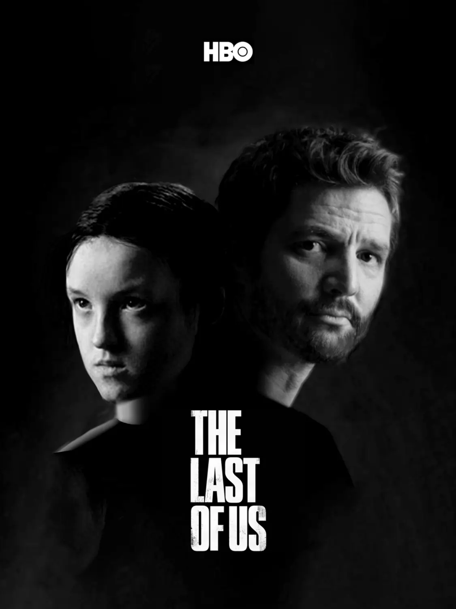

ULTIMES NOTICIES
'The Last of Us' nació como un videojuego de Naughty Dog que arrasó en ventas tras su lanzamiento en 2013 (y que acaba de recibir un flamante remake para PS5), gozando además de una buena acogida crítica. Siete años después llegaría una secuela, siendo también en 2020 cuando se anunció que HBO preparaba una adaptación televisiva. Protagonizada por Pedro Pascal y Bella Ramsey, 'The Last of Us' apunta a ser todo un bombazo cuando podamos verla. Todavía habrá que esperar para ello, pero mientras tanto vamos a repasar todo lo que se sabe hasta ahora al respecto, información que iremos actualizando a medida que sepamos más sobre ella.
